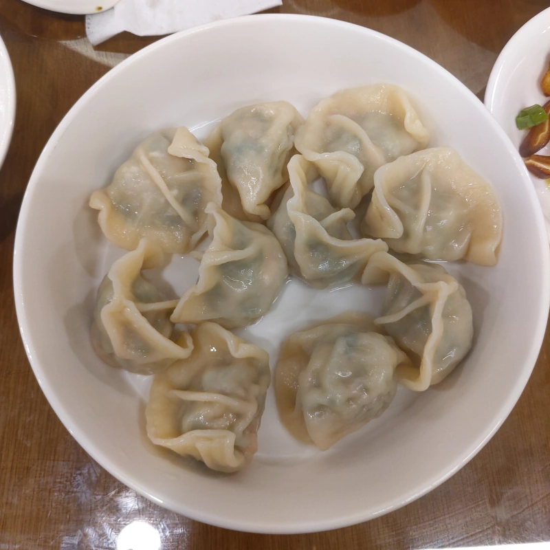

[竹北] 吉祥天 私房小廚
於 2019/12/29 加入二訪的資料，請看本篇文章的後面。
| 餐廳名稱: | 吉祥天 私房小廚 |
|---|---|
| 地 址: | 新竹縣竹北市文信路383號 |
| 營業時間: | 11:00 - 14:00 17:00 - 20:30 |
| 週二公休 | |
| 電 話: | 03 657 0661 |
今天本來相中了一家光明商圈的小餐廳，無奈趕到時，客滿兼賣完，不收客人了。 所幸光明商圈餐廳非常多，一定有得吃，就開始找下一間餐廳了。一轉角， 本來 老拳棒棒 的位置，變成了吉祥天私房小廚。 回家看了老拳棒棒官網，才知道他們剛搬不久。 在門口看了 吉祥天 的小黑板， 感覺價位還可以，就決定踩雷看看。
門口的樣子，沒想到招牌做這麼大。
近一點的門口。

門口小黑板。

室內的一個角落，拿餐具、醬料的地方。
點完菜，才想起菜單忘了拍，不過門口小黑板大概佔菜單一半了吧。官網照片有菜單，可是很舊了，目前多了很多品項。 感覺這間餐廳是一家人經營，媽媽廚藝厲害，在廚房，似乎有很多私房菜，經常換菜單。爸爸點餐、跑堂。女兒內場外場都幫忙。
點了老闆說最多人點的椒麻雞，果然不錯，份量大，調味佳。非常棒的是用漂亮瓷器裝著，配菜也都不錯。
餛飩湯。蠻正常的，還不錯喝。
今天陰錯陽差來到 吉祥天 私房小廚，印象蠻好的，也是一間堪吃的平凡店家，但感覺水準比平凡再好一些。 可以迅速填飽肚子，又不會花太多錢。竹北已經倒掉很多餐廳了，祝福 吉祥天私房小廚 能撐下去， 維持熱情，賺錢並進入良性循環，繼續拿出更多私房料理。
二訪資料:
這次記得拍菜單了，感覺也更新幾次了，最新的長這樣。
月亮蝦餅，勘吃，覺得比不上知名泰國菜餐館，可是問題是價錢也不一樣啊。
最棒的椒麻雞腿飯，整間店最值得吃的就是這道菜。
小菜 魯油豆腐 與 柴燒煙熏豬頭皮，魯油豆腐很平凡，柴燒煙熏豬頭皮 確實多了煙燻的香味，我是我覺得鹹度稍差一些，刀工也有些凌亂，一些大塊，一些小塊，吃一次就好了。 大庄路 三輪車小吃 的 煙熏豬頭皮 明顯地好很多。
韭菜水餃，店家自調的醬汁是不錯。 唉，水餃跟牛肉麵這兩種東西，每個人都有自己喜歡的味道，這家的水餃跟我個人喜好 不合，吃一次就好了。 
吉祥天 私房小廚 椒麻雞腿飯 很棒，小菜包括月亮蝦餅都不大好，他就是一間還算好吃的平凡店家，有在賣一些花蓮自家的蔬果，歡迎大家捧場。